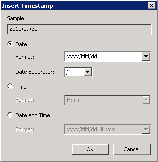
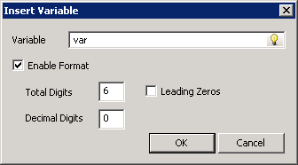

|
|
|
|
|
|
|
|
Dynamic content messages are user event messages that include current variable values, time stamps, and other text you want to predefine.
Messages with dynamic content can be used in:
Event logging: Log user actions by creating messages with dynamic content, such as current values, date, and time. For more information on custom event messages, see Section 16.2.2.2, Event Logging.
Data logging: Log data for multiple variables into one CSV file at runtime. For more information, see Section 13.1.1.5, Saving Multiple Variable Values to a Single CSV File.
Message Displays: Display messages on the panel with dynamic content when used with text resources. For more information, see Section 14.3, Example: Creating a Message Display.
E-mails: Send an e-mail message with dynamic content. For more information on how to set up an e-mail operation, see Section 9.5.20, E-mail Operations.
Forms: Add a message display with dynamic content to appear on the form. For more information, see Section 27.3.4, Adding a Data Display or Message Display.
Text Resources: Create text resources with dynamic content to use with message displays. For more information on text resources, see Section 21.1.2, Resource Editors (Color, Text, Image).
Dynamic Alarm Messages: Display alarm messages with dynamic content. For more information, see Section 16.3.8, Setting Up Dynamic Messages in Alarms.
Dynamic content can be created in a text resource's label column, an e-mail's subject, and in an e-mail's message.
Right-click the text resource's label column, the e-mail's subject field, or the e-mail's message field and select Insert.
Select Time stamp, Variable or Vijeo Design'Air Plus Alarm URL.
Custom time stamp

Property |
Description |
Sample |
Displays the time stamp output for the format defined in this dialog box. |
Date |
Select if you want to display a date. Choose the date format and date separator. |
Time |
Select if you want to display a time. Choose the time format. |
Date and Time |
Select if you want to display date and time. Choose the date and time format you want. |
Time stamp: The Date, Time, or Date & Time menu options allow you to select predefined formats. Once the format is selected, the time stamp inserts into the field.

Property |
Description |
Variable |
Select a valid variable in the project. Supports BOOL, Integer, String, and Float types. BOOL and Integer types are formatted as decimal numbers. |
Enable Format |
Select to enable variable code formatting. |
Total Digits |
Enter the minimum number of digits or characters to display. For example, if Total Digits is 6, Decimal Digits is 0, and the variable value is 5, the output would be: 000005 See below for more formatting examples. |
Decimal Digits |
Enter the minimum number of decimal digits to display. For example, if Total Digits is 10, Decimal Digits is 9, and the variable value is 5, the output would be: 0.000000005 See below for more formatting examples. |
Leading Zeros |
Select to fill the number with leading zeros. |
Vijeo Design'Air Plus Alarm URL
This option inserts an Alarm URL which is <url: AirPlus,Alarm>. Use this URL to open the Vijeo Design’Air Plus App and launch the alarm page in the tablet project associated with the HMI.
For more information, see Accessing the Alarm Panel from Email or SMS message in Section 23.1.1.3 Working in Vijeo Design’Air Plus.
Click OK to insert the time stamp or the variable.
The tables below describe variable and time stamp formatting codes.
Format Code |
Description |
|
<var:variableName,m.n> |
Inserts the variable name. The following describes the components in the format code. |
|
variableName |
Indicates the variable name. Supports BOOL, Integer, String, and Float types. BOOL and Integer types will be formatted as decimal numbers. |
|
m |
Indicates the number of characters to fill for the variable value. The value will be displayed left justified. |
|
n |
Indicates the decimal digits, for Integer types. |
|
Format Code |
Description |
|
<timestamp:MM/dd/yy> |
Inserts the date and time. The following describes the components in the format code. For MMM and MMMM, enter the month in English only (for example, FEB and February). |
|
y |
Indicates the one-digit year, with no leading zero. |
|
yy |
Indicates the two-digit year with leading zeros. |
|
yyyy |
Indicates the four-digit year. |
|
M |
Indicates one- or two-digit month with no leading zeros or spaces. |
|
MM |
Indicates two-digit month with leading zeros. |
|
MMM |
Indicates three-character month name in all uppercase letters. |
|
MMMM |
Indicates the full name of the month in mixed case letters. |
|
d |
Indicates the day (one- or two digit) with no leading zeros or spaces. |
|
dd |
Indicates the day (two-digit) with leading zeros. |
|
H |
Indicates one- or two-digit hour in 24-hour format with leading zeros or spaces. |
|
HH |
Indicates the hour in 24-hour format with no leading zeros. |
|
h |
Indicates one-or two-digit hour in 12-hour format with no leading zeros or spaces. |
|
hh |
Indicates the hour in 12-hour format with leading zeros. |
|
m |
Indicates the minutes (one- or two-digit) without leading zeros or spaces. |
|
mm |
Indicates the minutes (two-digit) with leading zeros. |
|
s |
Indicates the seconds (one- or two-digit) without leading zeros or spaces. |
|
ss |
Indicates the seconds (two-digit) with leading zeros. |
|
a |
Indicates AM/PM in uppercase. |
|
Other Characters |
Indicates the allowable characters within the format code. They are: - : \ / ^ $ ( ) < > { } [ ] . * + and space Alphanumeric characters and characters that do not appear in this list can be used between single quotes, for example: ’r;=’, ’r;~’ or 'km' |
|
Example 1: Variable
Current
Temperature: <var:DINT01,2> degrees
Output:
Current
Temperature: 5 degrees
Current Temperature: 11 degrees
Example 2: Variable Decimal Places
DINT01 = 5
<var:DINT01,06.0>
<var:DINT01,6.0>
<var:DINT01,04.1>
<var:DINT01,10.9>
Output:
000005
5
000.5
0.000000005
Example 3: Time stamp
<timestamp:MM/dd/yy HH:mm:ss> <var:Temperature> degrees, <var:Pressure,3.2>, <var:Velocity> km/h
Output:
12/23/09 23:34:25 3 degrees, 2. 17, 15 km/h
Example 4: Custom Time stamp
Door
Opened: Date: <timestamp:dd-MMM-yyyy>
Time: <timestamp:HH:mm:ss
a>
Door Closed: Date: <timestamp:dd-MMM-yyyy>
Time: <timestamp:HH:mm:ss
a>
Output:
Door
Opened: Date: 23-DEC-2009 Time: 09:30:34 AM
Door Closed: Date: 23-DEC-2009 Time: 11:25:21 AM